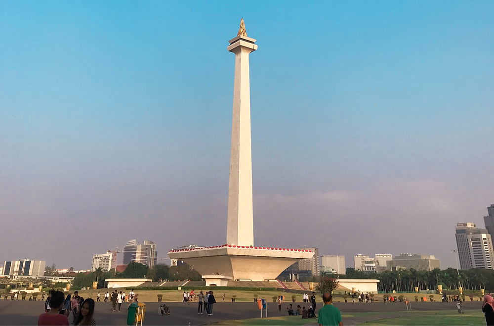
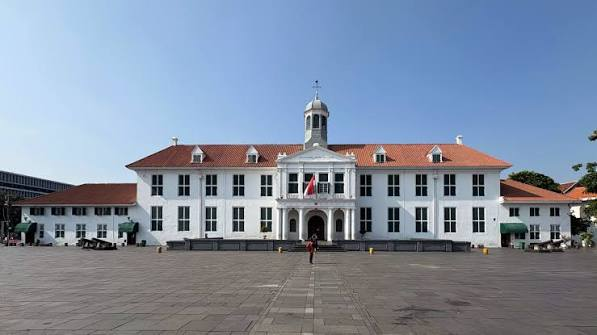
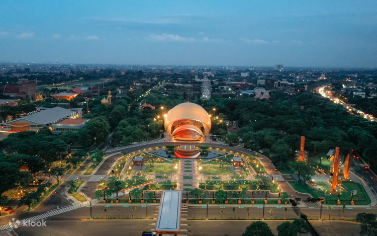
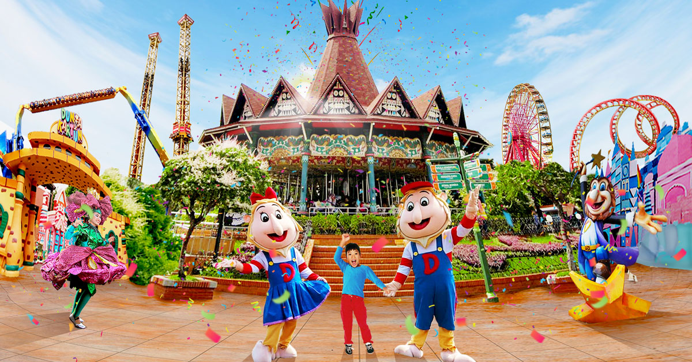
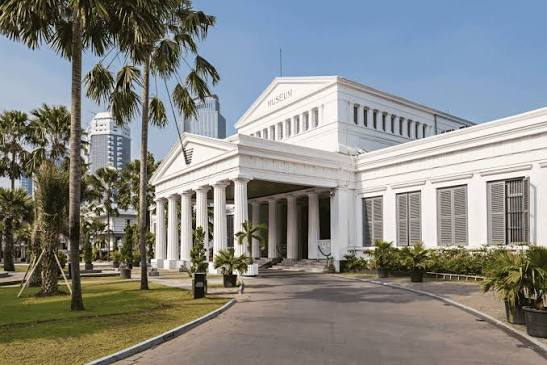
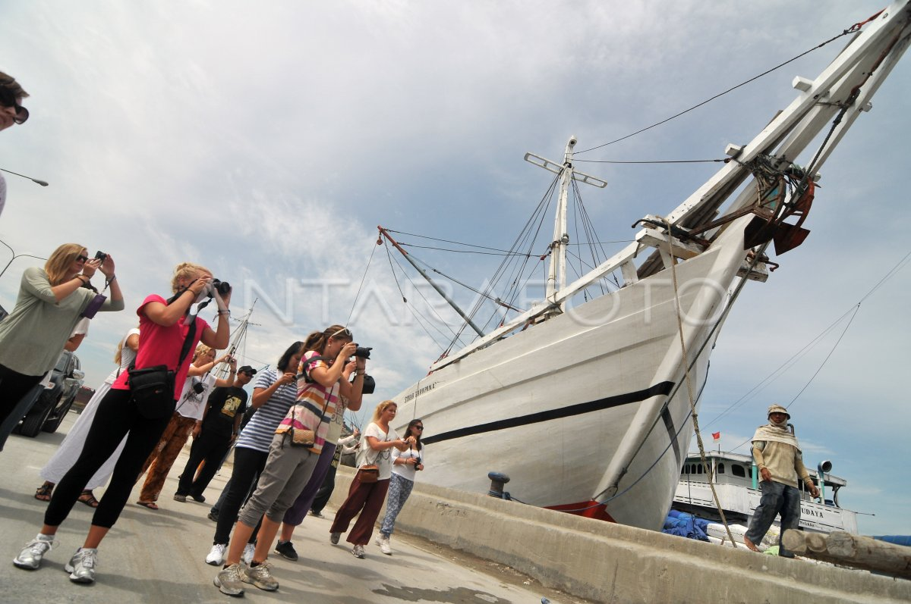
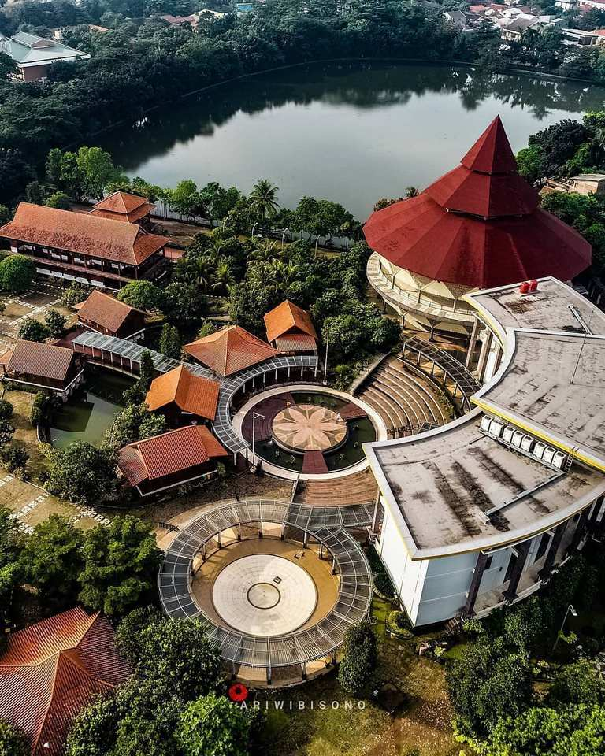
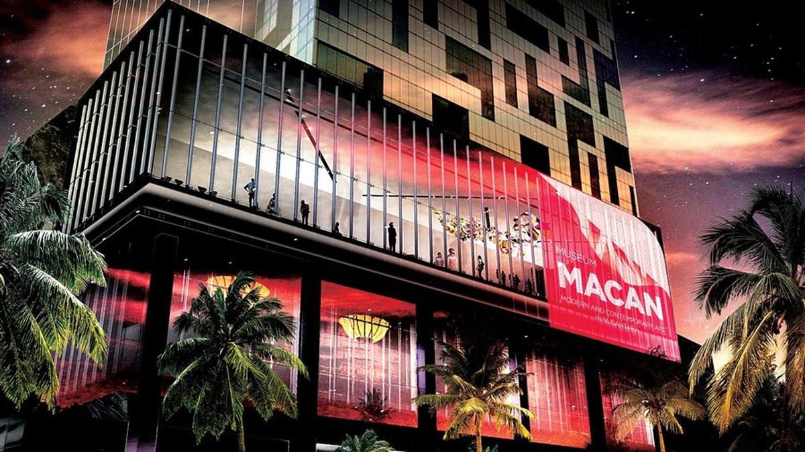

01 — LANDMARK
Monas
The National Monument, or Monas, is one of the most recognizable landmarks in Jakarta. It represents Indonesia's struggle for independence.
DISCOVER JAKARTA
Explore some of the most interesting places in Jakarta, from historical landmarks to cultural and modern attractions.

01 — LANDMARK
The National Monument, or Monas, is one of the most recognizable landmarks in Jakarta. It represents Indonesia's struggle for independence.

02 — HISTORY
Kota Tua is a historic area filled with old colonial buildings, museums, and public spaces. It is one of Jakarta's most popular historical destinations.

03 — CULTURE
Taman Mini Indonesia Indah introduces the diversity of Indonesian culture through traditional houses, museums, parks, and cultural attractions.

04 — RECREATION
Ancol is a large recreational area in North Jakarta offering beaches, entertainment, parks, and various activities for visitors.

05 — MUSEUM
Also known as the Elephant Museum, this museum contains collections that represent Indonesian history, culture, art, and heritage.

06 — HERITAGE
Sunda Kelapa is a historic harbor that played an important role in Jakarta's maritime history and remains known for its traditional wooden ships.

07 — BETAWI CULTURE
Setu Babakan is a cultural area dedicated to preserving Betawi traditions, including traditional houses, food, arts, and cultural performances.

08 — ART
Museum MACAN is a contemporary art museum that presents modern and contemporary artworks from Indonesia and around the world.